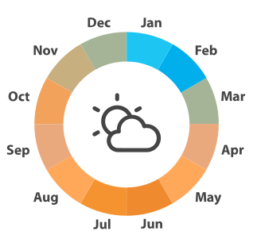

Climate & Weather
Arequipa is in a fertile valley surrounded by high-peaked mountains. But the broader region sits on the edge of the driest desert in the world, the Atacama Desert. A couple of hundred miles from the city, in the Cotahuasi area, altitudes range from 3,000 feet to 20,000 feet (and above) and encompass nineteen ecological zones. If you venture out to the mountains and highlands around Arequipa, expect stronger sun and winds during the day and significantly cooler temperatures at night. In terms of weather, Arequipa has plenty of sunny days that are typical of high desert climates and temperatures moderated by the city’s 7,660 feet (2,335 meters) elevation. Daytime temperatures are usually around 65°F (18°C), rarely going below 50°F (10°C) or rising above 77°F (25°C). Nights can dip down to 45°F (7°C).
Best Time to Visit
The city of Arequipa enjoys around 300 days of sunshine each year. The best time to visit Arequipa is anytime from April to November when the weather is pleasant. Conditions are sunny with blue skies, and daytime temperatures are mild. The region’s high altitude and plenty of sun produce high risk for sunburn, so stroll the streets of Arequipa wearing a hat and high SPF sunscreen. If you plan to add Colca Canyon to your Arequipa itinerary, the best time to plan your trip is from May to November. These months are the dry season in Colca Canyon, which coincides with beautiful weather in Arequipa too. One of the highlights of visiting Colca is spotting Andean condors, and chances of seeing them outside the dry season is much lower.
Data
| Area: | 63,345 sq km |
| Population: | 984,000 |
| Capital: | Arequipa |
| Languages: | Spanish, Quechua |
| Currency: | Soles |
| Time Zone: | GMT-5 |
| Calling Code: | + 054 |
| Internet TLD: | .pe |
Weather
| Temperature: | 45 ºF |
| Conditions: | Mostly Clear |
| Wind: | 4 mph |
| Wind Chill: |